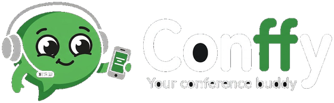
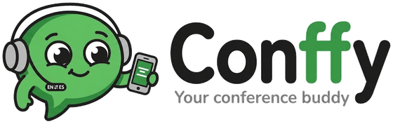

<!doctype html>
<html lang="es">
<head>
<meta charset="utf-8">
<meta name="viewport" content="width=device-width, initial-scale=1, viewport-fit=cover">
<title>conffy · subtítulos en vivo</title>
<meta name="theme-color" content="#262626">
<link rel="icon" type="image/png" sizes="64x64" href="assets/favicon.png">
<link rel="apple-touch-icon" sizes="180x180" href="assets/apple-touch-icon.png">
<link rel="preload" href="assets/fonts/nunito-latin.woff2" as="font" type="font/woff2" crossorigin>
<style>
  /* Nunito (SIL OFL 1.1, see assets/fonts/OFL.txt), self-hosted from Google Fonts so the
     app looks right when the venue wifi has no internet. One variable file covers 400–800. */
  @font-face {
    font-family: "Nunito"; font-style: normal; font-weight: 200 1000; font-display: swap;
    src: url(assets/fonts/nunito-latin-ext.woff2) format("woff2");
    unicode-range: U+0100-02BA, U+02BD-02C5, U+02C7-02CC, U+02CE-02D7, U+02DD-02FF, U+0304, U+0308, U+0329, U+1D00-1DBF, U+1E00-1E9F, U+1EF2-1EFF, U+2020, U+20A0-20AB, U+20AD-20C0, U+2113, U+2C60-2C7F, U+A720-A7FF;
  }
  @font-face {
    font-family: "Nunito"; font-style: normal; font-weight: 200 1000; font-display: swap;
    src: url(assets/fonts/nunito-latin.woff2) format("woff2");
    unicode-range: U+0000-00FF, U+0131, U+0152-0153, U+02BB-02BC, U+02C6, U+02DA, U+02DC, U+0304, U+0308, U+0329, U+2000-206F, U+20AC, U+2122, U+2191, U+2193, U+2212, U+2215, U+FEFF, U+FFFD;
  }

  /* ---------- tokens ---------- */
  :root {
    /* brand palette: the only literal colors in this file */
    --green: #6BC974; --green-strong: #4BAD54; --charcoal: #262626; --gray: #C4C4C4; --white: #FFFFFF;

    /* dark theme (default) */
    --bg: var(--charcoal);
    --surface: color-mix(in srgb, var(--white) 6%, var(--charcoal));       /* #333333 */
    --surface-hover: color-mix(in srgb, var(--white) 11%, var(--charcoal)); /* #3E3E3E */
    --line: color-mix(in srgb, var(--gray) 22%, var(--charcoal));           /* #494949 */
    --text: var(--white);
    --muted: var(--gray);
    --accent: var(--green);
    --accent-strong: var(--green-strong);
    --on-accent: var(--charcoal);
    --accent-soft: color-mix(in srgb, var(--green) 16%, var(--surface));
    --focus: var(--green);
    --rule: var(--green);
    --bar-bg: color-mix(in srgb, var(--surface) 82%, transparent);
    --shadow: none;

    --font: "Nunito", ui-rounded, "SF Pro Rounded", system-ui, -apple-system, "Segoe UI", sans-serif;
    --radius: 1.1rem;
    --tap: 44px;
    --ease: 180ms ease;
    --old: 0.45;
    --size: 1.9rem;
    color-scheme: dark;
  }
  /* light theme: chosen by the viewer, or by the OS when the theme is "auto" (see <head> script) */
  :root[data-theme="light"] {
    --bg: var(--white);
    --surface: color-mix(in srgb, var(--green) 7%, var(--white));           /* #F5FBF5 */
    --surface-hover: color-mix(in srgb, var(--green) 16%, var(--white));    /* #E7F6E9 */
    --line: var(--gray);
    --text: var(--charcoal);
    --muted: color-mix(in srgb, var(--charcoal) 75%, var(--white));         /* #5C5C5C */
    --accent-soft: color-mix(in srgb, var(--green) 22%, var(--white));      /* #DEF3E0 */
    --focus: color-mix(in srgb, var(--green-strong) 70%, var(--charcoal));  /* #408446 */
    --rule: var(--green-strong);
    --bar-bg: color-mix(in srgb, var(--white) 85%, transparent);
    --shadow: 0 1px 2px color-mix(in srgb, var(--charcoal) 8%, transparent);
    --old: 0.55;
    color-scheme: light;
  }

  /* ---------- base ---------- */
  * { box-sizing: border-box; }
  html, body { height: 100%; margin: 0; }
  body {
    background: var(--bg); color: var(--text);
    font-family: var(--font); font-size: 1.0625rem; line-height: 1.5;
    -webkit-font-smoothing: antialiased; -webkit-tap-highlight-color: transparent;
  }
  a, button { color: inherit; font: inherit; }
  button { cursor: pointer; }
  :focus-visible { outline: 3px solid var(--focus); outline-offset: 3px; }
  svg { flex: none; }
  .wrap {
    max-width: 46rem; margin: 0 auto;
    padding: max(1.5rem, env(safe-area-inset-top)) max(1rem, env(safe-area-inset-right)) max(2rem, env(safe-area-inset-bottom)) max(1rem, env(safe-area-inset-left));
  }
  .wrap > p:not(.lede) { background: var(--surface); border: 1px solid var(--line); border-radius: var(--radius); padding: 1.25rem; }
  .wrap > p:not(.lede) a { color: var(--text); font-weight: 700; text-decoration-color: var(--accent-strong); text-decoration-thickness: 2px; text-underline-offset: 3px; }

  /* shared live indicator */
  .tally { position: relative; width: 0.55rem; height: 0.55rem; border-radius: 50%; background: var(--muted); flex: none; }
  .live .tally { background: var(--accent); }
  .live .tally::after {
    content: ""; position: absolute; inset: 0; border-radius: 50%; background: var(--accent);
    animation: pulse 1.8s ease-out infinite;
  }
  @keyframes pulse { from { transform: scale(1); opacity: 0.6; } to { transform: scale(2.8); opacity: 0; } }

  /* ---------- session list ---------- */
  .brand { margin: 0.25rem 0 0.5rem; line-height: 0; }
  .top { display: flex; align-items: flex-start; justify-content: space-between; gap: 1rem; }
  .brand img { height: clamp(4rem, 17vw, 6.5rem); width: auto; max-width: 100%; aspect-ratio: 560 / 173; }
  .brand .logo-light, [data-theme="light"] .brand .logo-dark { display: none; }
  [data-theme="light"] .brand .logo-light { display: inline; }
  .lede { color: var(--muted); margin: 0 0 1.75rem; max-width: 34rem; font-size: 1.0625rem; }
  .sessions { list-style: none; margin: 0; padding: 0; display: grid; gap: 0.875rem; }
  .session {
    display: grid; grid-template-columns: minmax(0, 1fr); grid-template-areas: "status" "title" "langs";
    gap: 0.5rem; padding: 1.1rem; background: var(--surface); border: 1px solid var(--line);
    border-radius: var(--radius); box-shadow: var(--shadow);
  }
  .session h2 { grid-area: title; font-size: 1.2rem; line-height: 1.3; font-weight: 800; margin: 0 0 0.35rem; overflow-wrap: anywhere; }
  .session .status {
    grid-area: status; justify-self: start;
    display: inline-flex; align-items: center; gap: 0.5rem;
    padding: 0.2rem 0.75rem 0.2rem 0.65rem; border-radius: 999px; border: 1px solid var(--line);
    font-size: 0.85rem; font-weight: 700; color: var(--muted);
  }
  .session.live .status { background: var(--accent-soft); border-color: transparent; color: var(--text); }
  .session.waiting .status .tally { background: transparent; box-shadow: inset 0 0 0 2px var(--muted); }
  .session.error .status { border-style: dashed; }
  .langs { grid-area: langs; display: flex; gap: 0.5rem; }
  .langs a {
    flex: 1; min-height: 48px; min-width: var(--tap); padding: 0 1rem;
    display: inline-flex; align-items: center; justify-content: center;
    border-radius: 999px; border: 1px solid var(--accent-strong); background: var(--accent-soft);
    font-weight: 800; letter-spacing: 0.06em; text-decoration: none; color: var(--text);
    transition: background-color var(--ease), color var(--ease), border-color var(--ease);
  }
  .langs a:active { background: var(--accent-strong); border-color: var(--accent-strong); color: var(--on-accent); }
  @media (hover: hover) {
    .langs a:hover { background: var(--accent); border-color: var(--accent); color: var(--on-accent); }
    .langs a:active { background: var(--accent-strong); border-color: var(--accent-strong); }
  }
  .empty {
    display: grid; justify-items: center; gap: 0.75rem; text-align: center;
    padding: 2rem 1.25rem; border: 1px dashed var(--line); border-radius: var(--radius);
    color: var(--muted); font-weight: 600; text-wrap: balance;
  }
  .empty::before { content: ""; width: 5rem; height: 5rem; background: url(assets/mascot.png) center / contain no-repeat; }
  @media (min-width: 40rem) {
    .wrap { padding-top: max(2.5rem, env(safe-area-inset-top)); }
    .session {
      grid-template-columns: minmax(0, 1fr) auto; grid-template-areas: "status langs" "title langs";
      align-items: center; column-gap: 1.5rem; padding: 1.25rem 1.25rem 1.25rem 1.5rem;
    }
    .session h2 { margin: 0; }
    .langs a { flex: none; min-width: 4.25rem; }
  }

  /* ---------- viewer ---------- */
  .viewer {
    display: grid; grid-template-rows: auto 1fr auto; grid-template-columns: minmax(0, 1fr);
    height: 100vh; height: 100dvh; overflow: hidden;
  }
  .bar { grid-row: 1; } .stage { grid-row: 2; } .foot { grid-row: 3; }
  .bar, .foot { background: var(--surface); }
  @supports ((backdrop-filter: blur(1px)) or (-webkit-backdrop-filter: blur(1px))) {
    .bar, .foot { background: var(--bar-bg); -webkit-backdrop-filter: blur(14px); backdrop-filter: blur(14px); }
  }
  .bar {
    display: flex; align-items: center; gap: 0.625rem; border-bottom: 1px solid var(--line);
    padding: calc(0.5rem + env(safe-area-inset-top)) max(0.75rem, env(safe-area-inset-right)) 0.5rem max(0.75rem, env(safe-area-inset-left));
  }
  .bar .title { flex: 1; min-width: 0; line-height: 1.25; }
  .bar .title strong { display: block; white-space: nowrap; overflow: hidden; text-overflow: ellipsis; font-weight: 800; font-size: 1rem; }
  .bar .status { display: flex; align-items: center; gap: 0.45rem; margin-top: 0.15rem; font-size: 0.8125rem; font-weight: 700; color: var(--muted); }
  .icon-btn {
    display: inline-flex; align-items: center; justify-content: center; flex: none;
    min-width: var(--tap); height: var(--tap); padding: 0 0.75rem;
    border: 1px solid var(--line); background: var(--surface); border-radius: 999px;
    text-decoration: none; font-weight: 800; color: var(--text);
    transition: background-color var(--ease), border-color var(--ease);
  }
  .bar .icon-btn { width: var(--tap); padding: 0; }
  .icon-btn:active { background: var(--surface-hover); border-color: var(--accent-strong); }
  .switch { display: flex; flex: none; padding: 3px; gap: 2px; border-radius: 999px; background: var(--surface); border: 1px solid var(--line); }
  .switch a {
    display: inline-flex; align-items: center; justify-content: center;
    min-width: var(--tap); height: var(--tap); padding: 0 0.6rem; border-radius: 999px;
    text-decoration: none; font-size: 0.875rem; font-weight: 800; letter-spacing: 0.06em; color: var(--muted);
    transition: background-color var(--ease), color var(--ease);
  }
  .switch a[aria-current="true"] { background: var(--accent); color: var(--on-accent); }
  .switch a:not([aria-current="true"]):active { background: var(--surface-hover); color: var(--text); }
  @media (hover: hover) {
    .icon-btn:hover { background: var(--surface-hover); border-color: var(--accent-strong); }
    .switch a:not([aria-current="true"]):hover { background: var(--surface-hover); color: var(--text); }
  }

  .stage {
    position: relative; overflow: hidden; display: flex; flex-direction: column; justify-content: flex-end;
    padding: 1rem max(1rem, env(safe-area-inset-right)) 1.25rem max(1rem, env(safe-area-inset-left));
  }
  /* immersive: tapping the captions hides both bars (and goes fullscreen where supported) */
  .viewer.immersive .bar, .viewer.immersive .foot { display: none; }
  .viewer.immersive .stage { padding-top: max(1rem, env(safe-area-inset-top)); padding-bottom: max(1.25rem, env(safe-area-inset-bottom)); }
  .hint {
    position: absolute; top: max(0.75rem, env(safe-area-inset-top)); left: 50%; transform: translateX(-50%);
    width: max-content; max-width: calc(100% - 2rem); margin: 0; padding: 0.45rem 0.9rem;
    background: var(--surface); border: 1px solid var(--line); border-radius: 999px;
    color: var(--text); font-size: 0.875rem; font-weight: 700; text-align: center;
    opacity: 0; pointer-events: none; transition: opacity var(--ease);
  }
  .hint.show { opacity: 1; }
  /* The captions box fills the stage below #notice and does the clipping and the top fade
     itself, so new lines still push old ones up and out, and the notice is never pushed away. */
  .captions {
    flex: 1 1 auto; min-height: 0; overflow: hidden; display: flex; flex-direction: column; justify-content: flex-end;
    -webkit-mask-image: linear-gradient(to bottom, transparent, #000 30%); mask-image: linear-gradient(to bottom, transparent, #000 30%);
    width: 100%; max-width: min(40ch, 100%); margin: 0 auto;
    font-size: var(--size); font-weight: 700; line-height: 1.35; letter-spacing: 0.012em;
    overflow-wrap: break-word;
  }
  .captions p {
    flex: none; margin: 0 0 0.55em; padding-left: 0.5em; border-left: 0.12em solid transparent;
    transition: opacity var(--ease), color var(--ease);
  }
  .captions p.old { opacity: var(--old); }
  .captions p:not(.old):not(.partial):last-child,
  .captions p:not(.old):not(.partial):has(+ .partial) { border-left-color: var(--rule); }
  .captions .partial { color: var(--muted); font-weight: 600; }
  .captions .partial::after {
    content: ""; display: inline-block; width: 0.1em; height: 0.95em; margin-left: 0.15em;
    vertical-align: -0.12em; border-radius: 0.05em; background: var(--accent);
    animation: caret 1.1s steps(2, jump-none) infinite;
  }
  @keyframes caret { from { opacity: 1; } to { opacity: 0; } }
  .notice {
    flex: none; display: flex; align-items: flex-start; gap: 0.6rem;
    width: 100%; max-width: 40rem; margin: 0 auto 1.25rem; padding: 0.8rem 1rem;
    background: var(--surface); border: 1px solid var(--line); border-radius: var(--radius);
    color: var(--text); font-size: 0.95rem; font-weight: 600; line-height: 1.4;
  }
  .notice::before {
    content: "i"; flex: none; display: grid; place-items: center; width: 1.4rem; height: 1.4rem; margin-top: -0.05rem;
    border-radius: 50%; background: var(--accent); color: var(--on-accent); font-weight: 800; font-size: 0.85rem;
  }
  .notice[hidden] { display: none; }

  .foot {
    display: flex; flex-wrap: wrap; justify-content: space-between; align-items: center; gap: 0.5rem 1rem;
    border-top: 1px solid var(--line); color: var(--muted); font-size: 0.875rem; font-weight: 700;
    padding: 0.5rem max(0.75rem, env(safe-area-inset-right)) calc(0.5rem + env(safe-area-inset-bottom)) max(0.75rem, env(safe-area-inset-left));
  }
  .tools { display: flex; align-items: center; gap: 0.5rem; }
  .zoom { display: inline-flex; }
  .zoom .icon-btn { min-width: 3.25rem; border-radius: 0; font-size: 1rem; }
  .zoom .icon-btn:first-child { border-radius: 999px 0 0 999px; }
  .zoom .icon-btn:last-child { border-radius: 0 999px 999px 0; margin-left: -1px; }
  .zoom .icon-btn:focus-visible { position: relative; z-index: 1; }
  .downloads { display: flex; flex-wrap: wrap; align-items: center; gap: 0.375rem; }
  .downloads .label { margin-right: 0.25rem; }
  .downloads a {
    display: inline-flex; align-items: center; gap: 0.3rem; min-height: var(--tap); padding: 0 0.8rem;
    border-radius: 999px; border: 1px solid var(--line); background: var(--surface);
    color: var(--text); font-size: 0.8125rem; font-weight: 800; letter-spacing: 0.04em; text-decoration: none;
    transition: background-color var(--ease), border-color var(--ease);
  }
  .downloads a svg { color: var(--muted); }
  .downloads a:active { background: var(--surface-hover); border-color: var(--accent-strong); }
  @media (hover: hover) { .downloads a:hover { background: var(--surface-hover); border-color: var(--accent-strong); } }

  @media (min-width: 48rem) {
    .bar { padding-block: calc(0.625rem + env(safe-area-inset-top)) 0.625rem; padding-inline: max(1.25rem, env(safe-area-inset-left)) max(1.25rem, env(safe-area-inset-right)); gap: 0.875rem; }
    .bar .title strong { font-size: 1.0625rem; }
    .stage { padding-inline: 2rem; padding-bottom: 2rem; }
    .foot { padding-inline: max(1.25rem, env(safe-area-inset-left)) max(1.25rem, env(safe-area-inset-right)); }
  }
  .icon-btn.round { width: var(--tap); padding: 0; }
  @media (max-width: 34rem) { :root { --size: 1.45rem; } }
  @media (prefers-reduced-motion: reduce) {
    *, *::before, *::after { transition: none !important; }
    .live .tally::after { animation: none; display: none; }
    .captions .partial::after { animation: none; }
  }
</style>
<script>
  // Resolve the theme before first paint. "conffy:theme" holds "light" or "dark";
  // no value means "auto", which follows the OS setting (and its changes).
  (() => {
    const mq = matchMedia("(prefers-color-scheme: light)");
    const apply = () => {
      let pref = null;
      try { pref = localStorage.getItem("conffy:theme"); } catch {}
      const theme = pref === "light" || pref === "dark" ? pref : (mq.matches ? "light" : "dark");
      document.documentElement.dataset.theme = theme;
      document.querySelector('meta[name="theme-color"]').content = theme === "light" ? "#FFFFFF" : "#262626";
    };
    window.applyTheme = apply;
    apply();
    mq.addEventListener("change", apply);
  })();
</script>
</head>
<body>
<main id="app"></main>
<script>
const LANGS = { en: "English", es: "Español", pt: "Português", fr: "Français", de: "Deutsch", it: "Italiano" };
const SPOKEN = { en: "inglés", es: "español", pt: "portugués", fr: "francés", de: "alemán", it: "italiano" };
const STATUS = { live: "En vivo", waiting: "Por comenzar", ended: "Finalizada", error: "Interrumpida" };
const app = document.getElementById("app");
const esc = (s) => s.replace(/[&<>"]/g, (c) => ({ "&": "&amp;", "<": "&lt;", ">": "&gt;", '"': "&quot;" })[c]);
const params = new URLSearchParams(location.search);

/* ---------------- theme picker (auto → light → dark) ---------------- */
const THEMES = ["auto", "light", "dark"];
const THEME_LABEL = { auto: "Tema automático", light: "Tema claro", dark: "Tema oscuro" };
const svg = (d) => `<svg aria-hidden="true" width="20" height="20" viewBox="0 0 24 24" fill="none" stroke="currentColor" stroke-width="2.25" stroke-linecap="round" stroke-linejoin="round">${d}</svg>`;
const THEME_ICON = {
  auto: svg(`<circle cx="12" cy="12" r="8.5"/><path d="M12 3.5v17a8.5 8.5 0 0 0 0-17z" fill="currentColor"/>`),
  light: svg(`<circle cx="12" cy="12" r="4"/><path d="M12 2.5v2M12 19.5v2M4.6 4.6l1.4 1.4M18 18l1.4 1.4M2.5 12h2M19.5 12h2M4.6 19.4L6 18M18 6l1.4-1.4"/>`),
  dark: svg(`<path d="M20 14.5A8.5 8.5 0 0 1 9.5 4a8.5 8.5 0 1 0 10.5 10.5z"/>`),
};
const themePref = () => { try { return localStorage.getItem("conffy:theme") || "auto"; } catch { return "auto"; } };
const themeButton = () => `<button class="icon-btn round" id="theme" type="button" aria-label="${THEME_LABEL[themePref()]}. Cambiar tema" title="${THEME_LABEL[themePref()]}">${THEME_ICON[themePref()]}</button>`;
function bindThemeButton() {
  const btn = document.getElementById("theme");
  btn.onclick = () => {
    const next = THEMES[(THEMES.indexOf(themePref()) + 1) % THEMES.length];
    try { if (next === "auto") localStorage.removeItem("conffy:theme"); else localStorage.setItem("conffy:theme", next); } catch {}
    window.applyTheme();
    btn.innerHTML = THEME_ICON[next];
    btn.setAttribute("aria-label", `${THEME_LABEL[next]}. Cambiar tema`);
    btn.title = THEME_LABEL[next];
  };
}

if (params.get("s") && params.get("lang")) viewer(params.get("s"), params.get("lang"));
else sessionList();

/* ---------------- session list ---------------- */
async function sessionList() {
  document.title = "conffy · subtítulos en vivo";
  app.className = "wrap";
  app.innerHTML = `
    <div class="top">
      <h1 class="brand">
        
        
      </h1>
      ${themeButton()}
    </div>
    <p class="lede">Seguí cada charla con subtítulos en vivo, en el idioma original o traducidos. Elegí una sala y tu idioma.</p>
    <ul class="sessions" id="list"><li class="empty">Cargando salas…</li></ul>`;
  bindThemeButton();
  const list = document.getElementById("list");
  const render = async () => {
    try {
      const sessions = await (await fetch("/api/sessions")).json();
      if (!sessions.length) { list.innerHTML = `<li class="empty">Todavía no hay salas configuradas. Agregalas en config/sessions.yml.</li>`; return; }
      list.innerHTML = sessions.map(({ config: c, state: s }) => {
        const langs = [c.source_lang, ...c.target_langs];
        return `<li class="session ${s.status}">
          <h2>${esc(c.title)}</h2>
          <div class="langs">${langs.map((l) =>
            `<a href="?s=${encodeURIComponent(c.id)}&lang=${l}" lang="${l}" aria-label="${esc(c.title)} en ${LANGS[l] || l}">${l.toUpperCase()}</a>`).join("")}</div>
          <span class="status"><span class="tally"></span>${STATUS[s.status] || s.status}, en ${SPOKEN[c.source_lang] || c.source_lang}</span>
        </li>`;
      }).join("");
    } catch { list.innerHTML = `<li class="empty">No se pudo conectar con el servidor. Reintentando…</li>`; }
  };
  await render();
  setInterval(render, 5000);
}

/* ---------------- viewer ---------------- */
async function viewer(sid, lang) {
  app.className = "viewer";
  let session;
  try {
    const res = await fetch(`/api/sessions/${encodeURIComponent(sid)}`);
    if (!res.ok) throw new Error();
    session = await res.json();
  } catch {
    app.className = "wrap";
    app.innerHTML = `<p>No existe la sala “${esc(sid)}”. <a href="/">Ver todas las salas</a></p>`;
    return;
  }
  const c = session.config;
  const langs = [c.source_lang, ...c.target_langs];
  document.title = `${c.title} · conffy`;
  const size = parseFloat(localStorage.getItem("conffy:size") || "0");
  if (size) document.documentElement.style.setProperty("--size", `${size}rem`);

  app.innerHTML = `
    <header class="bar">
      <a class="icon-btn" href="/" aria-label="Volver a las salas"><svg aria-hidden="true" width="22" height="22" viewBox="0 0 24 24" fill="none" stroke="currentColor" stroke-width="2.5" stroke-linecap="round" stroke-linejoin="round"><path d="M15 18l-6-6 6-6"/></svg></a>
      <div class="title"><strong>${esc(c.title)}</strong><span class="status" id="status"><span class="tally"></span>Conectando…</span></div>
      <nav class="switch" aria-label="Idioma de los subtítulos">${langs.map((l) =>
        `<a href="?s=${encodeURIComponent(sid)}&lang=${l}" lang="${l}" ${l === lang ? 'aria-current="true"' : ""}>${l.toUpperCase()}</a>`).join("")}</nav>
    </header>
    <section class="stage">
      <p class="notice" id="notice" hidden></p>
      <div class="captions" id="captions" lang="${lang}"><p class="partial">Esperando al orador…</p></div>
      <p class="hint" id="hint" aria-live="polite"></p>
    </section>
    <footer class="foot">
      <span class="tools">
        <span class="zoom">
          <button class="icon-btn" id="smaller" aria-label="Achicar texto">A−</button>
          <button class="icon-btn" id="bigger" aria-label="Agrandar texto">A+</button>
        </span>
        ${themeButton()}
        <button class="icon-btn round" id="immersive" type="button" aria-label="Solo subtítulos, pantalla completa" title="Solo subtítulos">${svg(`<path d="M4 9V4h5M20 9V4h-5M4 15v5h5M20 15v5h-5"/>`)}</button>
      </span>
      <span class="downloads"><span class="label">Transcripción:</span>
        ${["srt", "vtt", "txt"].map((f) => `<a href="/api/sessions/${encodeURIComponent(sid)}/export.${f}?lang=${lang}"><svg aria-hidden="true" width="15" height="15" viewBox="0 0 24 24" fill="none" stroke="currentColor" stroke-width="2.5" stroke-linecap="round" stroke-linejoin="round"><path d="M12 4v11M7 10l5 5 5-5M5 20h14"/></svg>${f.toUpperCase()}</a>`).join("")}
      </span>
    </footer>`;

  const box = document.getElementById("captions");
  const statusEl = document.getElementById("status");
  const notice = document.getElementById("notice");
  const finals = new Map();          // seq -> text
  let partial = null;                 // { seq, text }
  const setStatus = (cls, text) => { statusEl.parentElement.parentElement.className = `bar ${cls}`; statusEl.className = `status ${cls}`; statusEl.innerHTML = `<span class="tally"></span>${text}`; };

  const render = () => {
    const seqs = [...finals.keys()].sort((a, b) => a - b).slice(-6);
    const lines = seqs.map((s, i) => `<p class="${i < seqs.length - 2 ? "old" : ""}">${esc(finals.get(s))}</p>`);
    if (partial && !finals.has(partial.seq)) lines.push(`<p class="partial" aria-hidden="true">${esc(partial.text)}</p>`);
    if (lines.length) box.innerHTML = lines.join("");
  };

  const zoom = (d) => {
    const cur = parseFloat(getComputedStyle(document.documentElement).getPropertyValue("--size")) || 1.9;
    const next = Math.min(4, Math.max(1, cur + d));
    document.documentElement.style.setProperty("--size", `${next}rem`);
    localStorage.setItem("conffy:size", String(next));
  };
  document.getElementById("smaller").onclick = () => zoom(-0.2);
  document.getElementById("bigger").onclick = () => zoom(0.2);
  bindThemeButton();

  // Immersive mode: tap the captions to hide the bars (fullscreen where the browser allows it,
  // e.g. not on iPhone Safari); tap again or press Esc to bring them back.
  const hint = document.getElementById("hint");
  let hintTimer;
  const setImmersive = (on) => {
    app.classList.toggle("immersive", on);
    if (on && document.fullscreenEnabled && !document.fullscreenElement) document.documentElement.requestFullscreen().catch(() => {});
    if (!on && document.fullscreenElement) document.exitFullscreen().catch(() => {});
    clearTimeout(hintTimer);
    hint.textContent = on ? "Tocá los subtítulos para ver los controles" : "";
    hint.classList.toggle("show", on);
    if (on) hintTimer = setTimeout(() => hint.classList.remove("show"), 2500);
  };
  document.querySelector(".stage").onclick = () => setImmersive(!app.classList.contains("immersive"));
  document.getElementById("immersive").onclick = () => setImmersive(true);
  document.addEventListener("fullscreenchange", () => { if (!document.fullscreenElement) setImmersive(false); });
  document.addEventListener("keydown", (e) => { if (e.key === "Escape") setImmersive(false); });

  // Keep phone screens on while reading. The browser drops the lock when the tab is hidden,
  // so it is requested again on return. Needs a secure context (https or localhost).
  if ("wakeLock" in navigator && matchMedia("(pointer: coarse)").matches) {
    const keepAwake = () => navigator.wakeLock.request("screen").catch(() => {});
    keepAwake();
    document.addEventListener("visibilitychange", () => { if (document.visibilityState === "visible") keepAwake(); });
  }

  const es = new EventSource(`/api/sessions/${encodeURIComponent(sid)}/captions/${lang}/stream`);
  es.onopen = () => { setStatus("live", "En vivo"); notice.hidden = true; };
  es.onerror = () => { if (es.readyState !== EventSource.CLOSED) setStatus("", "Reconectando…"); };
  es.addEventListener("caption", (e) => {
    const cap = JSON.parse(e.data);
    if (cap.kind === "final") {
      finals.set(cap.seq, cap.text);
      if (partial && partial.seq <= cap.seq) partial = null;
      if (finals.size > 50) finals.delete(Math.min(...finals.keys()));
    } else {
      partial = { seq: cap.seq, text: cap.text };
    }
    notice.hidden = true;
    render();
  });
  es.addEventListener("session", (e) => {
    const ev = JSON.parse(e.data);
    partial = null; render();
    notice.hidden = false;
    notice.textContent = ev.kind === "ended"
      ? "La charla terminó. Podés descargar la transcripción completa abajo."
      : "La transcripción se interrumpió. El equipo de producción ya fue notificado.";
    setStatus("", ev.kind === "ended" ? "Finalizada" : "Interrumpida");
  });
}
</script>
</body>
</html>
